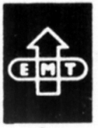
EMT/BARCO-EMT(バーコEMT)
ヨーロッパのスタジオ等で使用されるプロフェッショナル用ターンテーブルを得意としたドイツ・ノイマンのブランド。カートリッジやアームがある。ステレオレコード初期からカートリッジを手がけた名門である。なおモノラルやSP用カートリッジや初期のアームはオルトフォンからのOEM調達であった。代理店は河村電気研究所、価格変更が頻繁だった。1990年代半ば（〜1993年）にバーコEMTとなり、代理店はエレクトリとなった。
代表作はTSD-15。針先確認用のルーペを組み込んだ特殊なシェル一体型であり、またコネクターも一般規格とは違うプロ規格の製品であるが、一部マニアには絶大な人気がある。自社内での改良（コネクターの一般規格化→XSD-15など）モデルの他に、他社にも技術供与された。
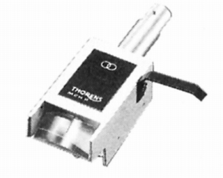
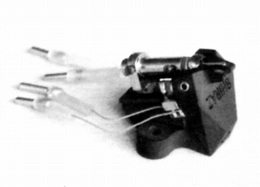
（左はトーレンス MCH-2。スタイラス等をオリジナルとは変えている。右はロクサンのSHIRAZ/MC。このモデルの母体もTSD-15。）
�T.カートリッジ
すべてMC型である。
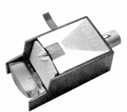
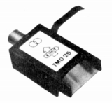
(TMD-25)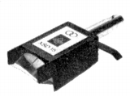
(XSD-15)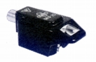
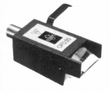
(左 OFD-25旧タイプ 右 OFD-25新タイプ)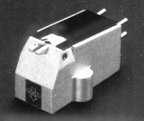
(HSD-6)�U.アーム
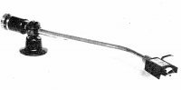
(RMA-297)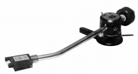
(929)�V.昇圧トランス
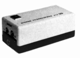
(STX20)